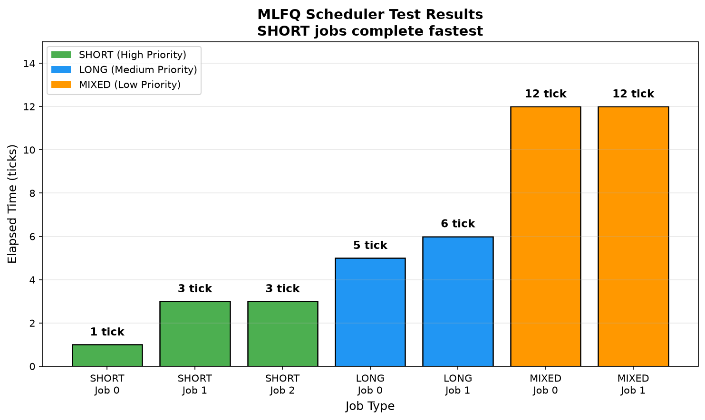
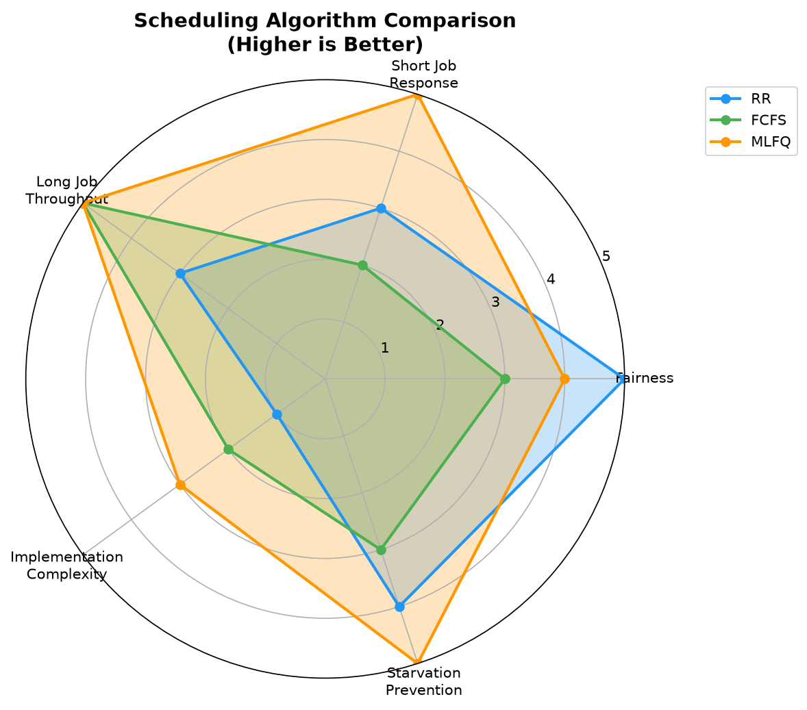
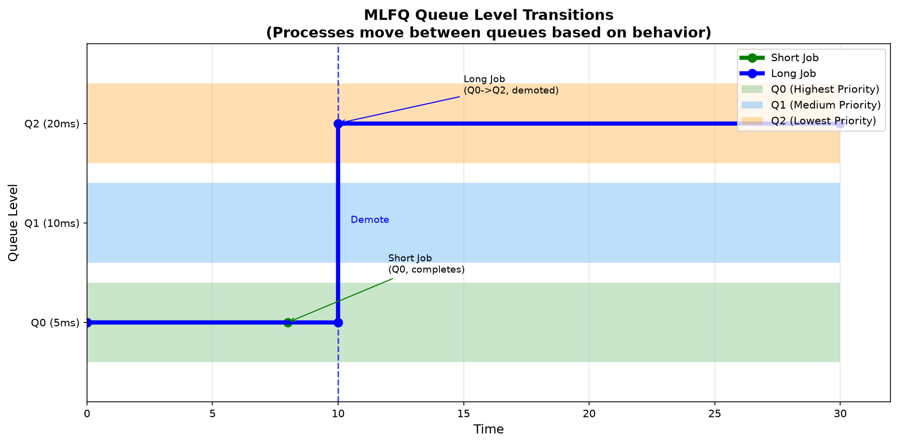
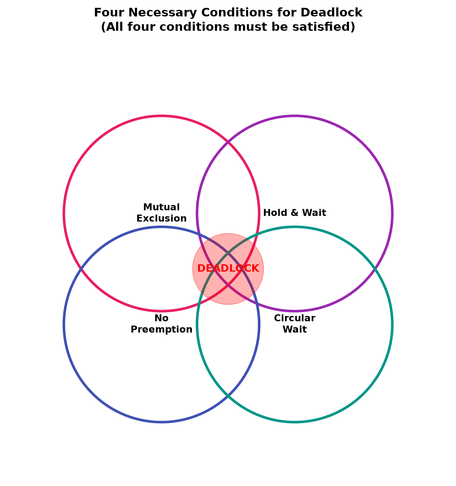
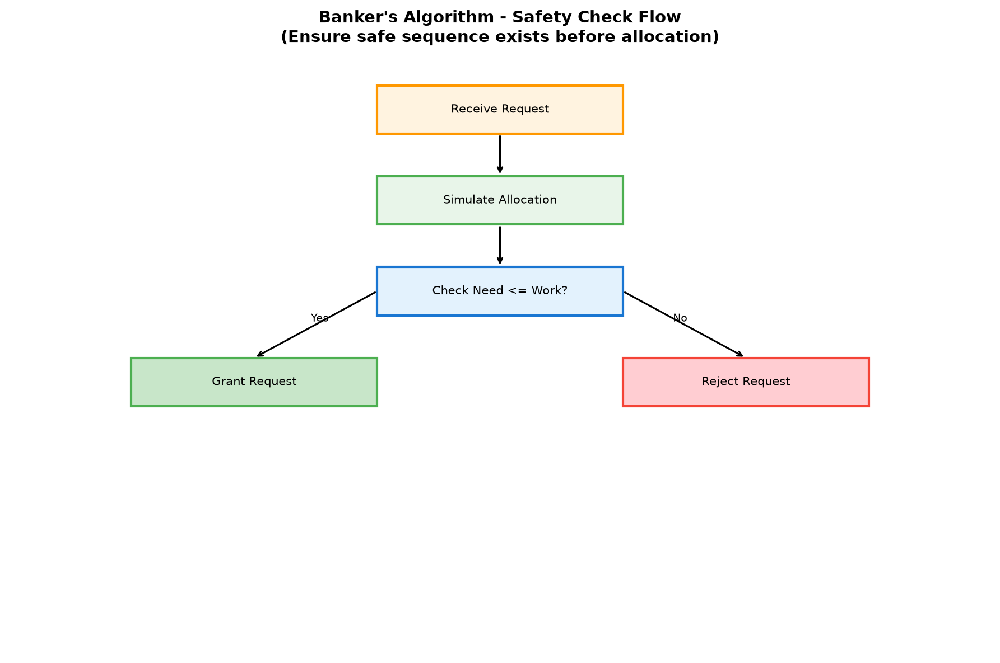
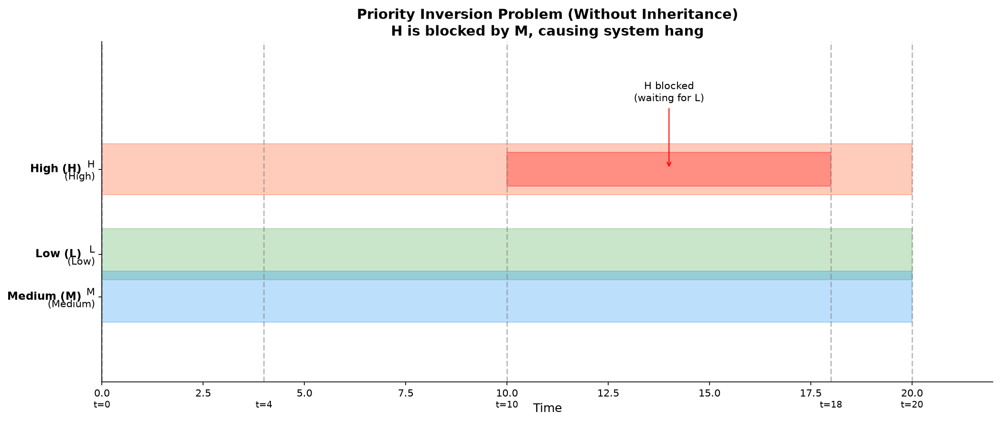
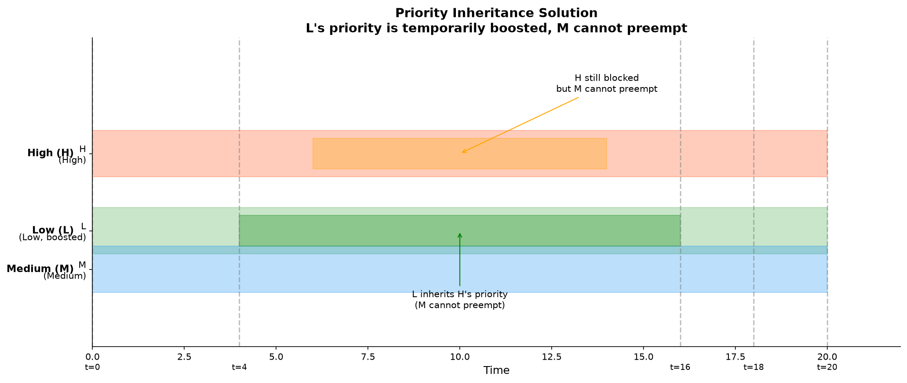
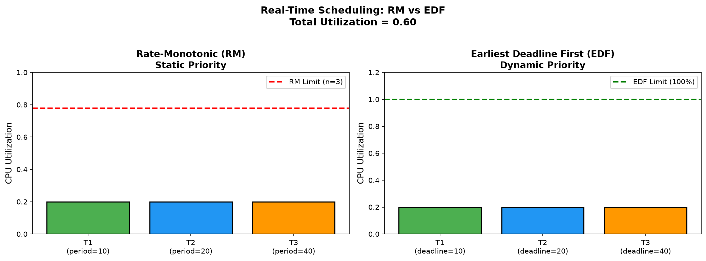
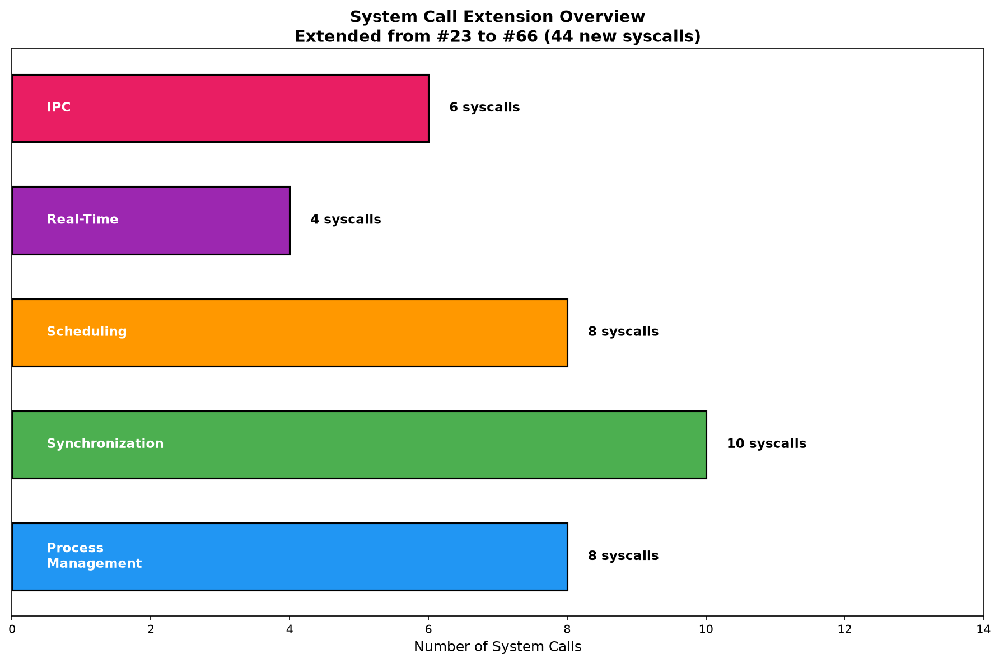
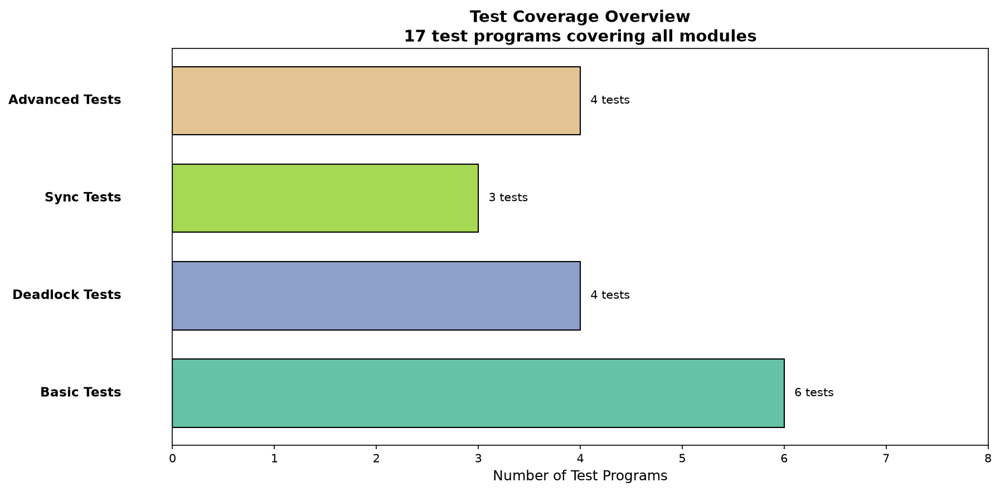

SHORT/LONG/MIXED 作业完成时间对比

RR/FCFS/MLFQ 多维度对比

进程在 Q0/Q1/Q2 间的迁移

互斥、占有并等待、不可剥夺、循环等待

安全性检查流程

高优先级被低优先级阻塞

L 继承 H 优先级，M 无法抢占

静态与动态优先级调度对比

从 #23 扩展到 #66

17 个测试程序
请访问 https://mermaid.live 在线渲染以下代码：
flowchart TB
subgraph PM["进程管理"]
PCB["PCB / 进程控制块"]
FORK["fork / exec / wait"]
end
subgraph SYNC["同步互斥"]
SEM["信号量 P/V"]
MON["管程 Monitor"]
end
subgraph DEADLOCK["死锁处理"]
COND["死锁四条件"]
BANK["银行家算法"]
end
subgraph SCHED["处理机调度"]
RR["RR 时间片轮转"]
FCFS["FCFS 先来先服务"]
MLFQ["MLFQ 多级反馈"]
end
PCB --> FORK
FORK --> SEM
SEM --> COND
COND --> BANK
FORK --> RR
RR --> FCFS
FCFS --> MLFQ
SEM --> MONflowchart LR
Theory["背景理论"] --> Kernel["内核实现"]
Kernel --> Test["用户测试"]
Test --> Verify["实测验证"]
Verify --> TheorystateDiagram-v2
[*] --> UNUSED
UNUSED --> USED
USED --> RUNNABLE
RUNNABLE --> RUNNING
RUNNING --> SLEEPING
RUNNING --> ZOMBIE
SLEEPING --> RUNNABLE
ZOMBIE --> [*]| 图片 | 文件 | PPT 页码 | 内容 |
|---|---|---|---|
| 1 | mlfq_results.png | 第9页 | MLFQ实测对比 |
| 2 | sched_comparison_radar.png | 第9页 | 调度算法雷达图 |
| 3 | mlfq_queue_transitions.png | 第8页 | MLFQ队列转换 |
| 4 | deadlock_conditions.png | 第10页 | 死锁四条件 |
| 5 | banker_flowchart.png | 第12页 | 银行家算法 |
| 6 | priority_inversion.png | 第14页 | 优先级反转 |
| 7 | priority_inheritance.png | 第14页 | 优先级继承 |
| 8 | rm_vs_edf.png | 第15页 | RM vs EDF |
| 9 | syscall_extension.png | 第3页 | 系统调用扩展 |
| 10 | test_coverage.png | 第16页 | 测试覆盖 |